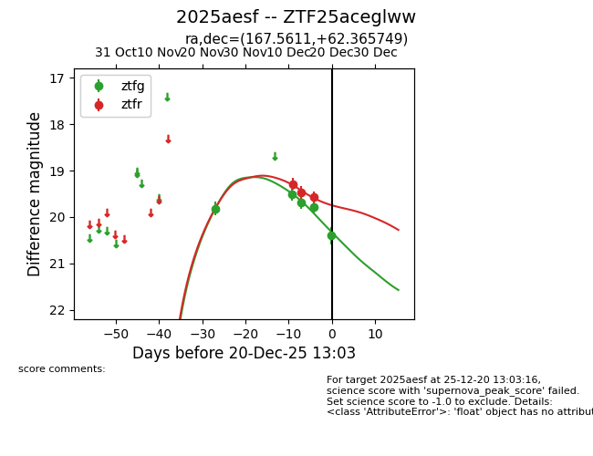
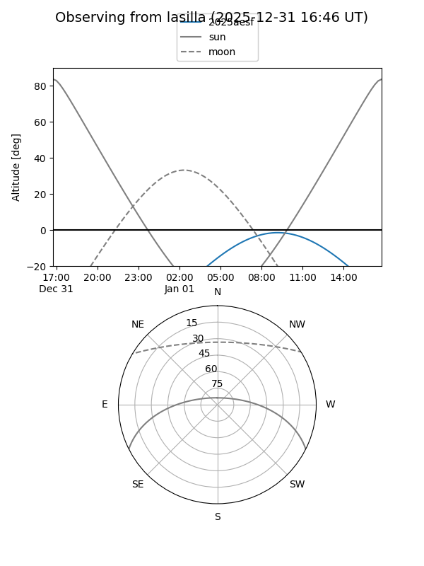
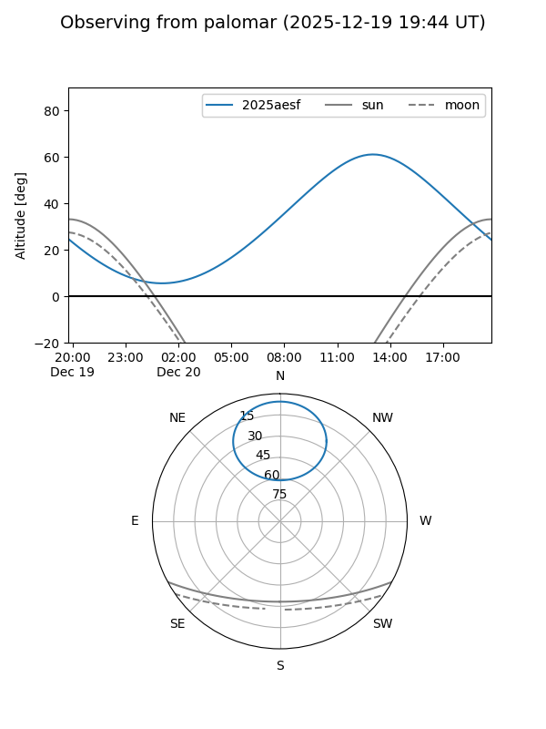
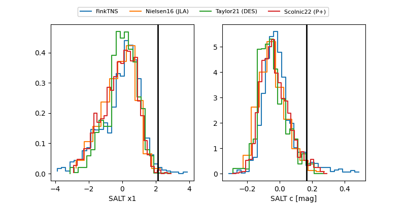

2025aesf
Target 2025aesf at 2025-12-31 17:00
Aliases and brokers:
FINK:
Lasair:
ALeRCE:
TNS:
YSE:
alt names
ZTF25aceglww (ztf,fink_ztf)
2025aesf (tns,yse)
Coordinates:
equatorial (ra, dec) = 167.5611,+62.36575
equatorial (HMS+DMS) = 11:10:14.66,+62:21:56.70
galactic (l, b) = (141.2912,+51.00289)
Flags:
Photometry:
last ztfg=20.40, ztfr=19.58
5 ztfg, 3 ztfr detections
Lightcurve

Visibility


Additional plots
